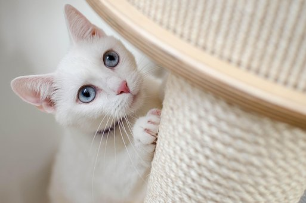

En España, al igual que en gran parte del mundo, se celebran principalmente dos fechas dedicadas a los gatos: el 8 de agosto y el 20 de febrero. Su capa es muy variada: pueden ser de un solo color, de dos colores, como blanco y negro, blanco y naranja, pardo y blanco o gris y blanco. Pueden tener un patrón de colores atigrado (gatos romanos).